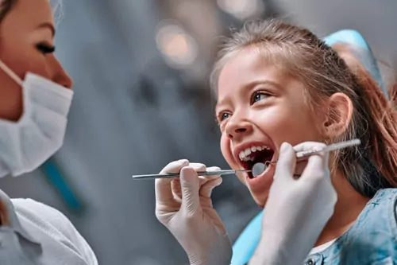
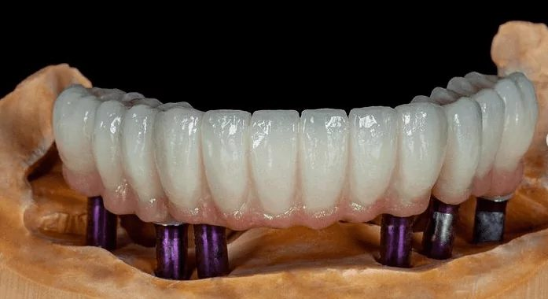
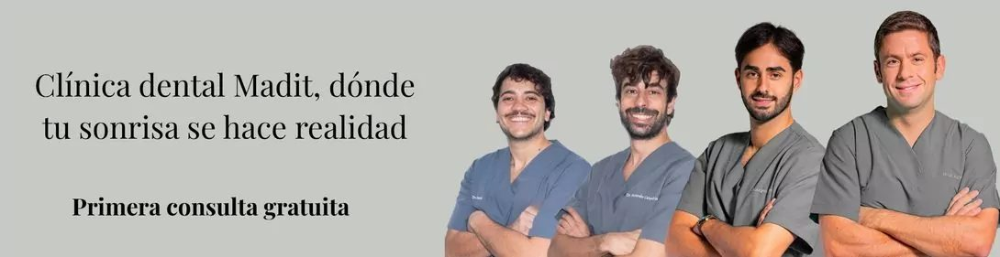
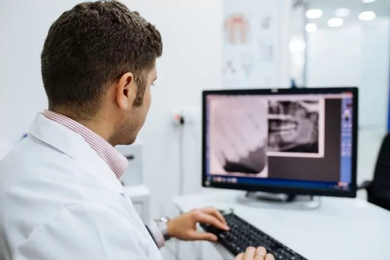
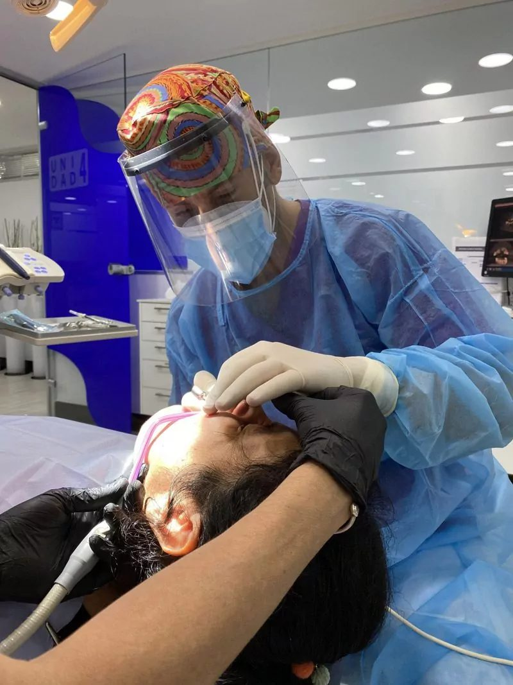

“Me da miedo el precio.”
En Madit: te damos el precio total por escrito antes de empezar, y la primera consulta no cuesta nada.
Un equipo joven y en formación continua en Puente de Vallecas. Primera consulta gratis, plan por escrito y cuotas cómodas.
Seamos sinceros
Por estas tres cosas. Las hemos eliminado.
“Me da miedo el precio.”
En Madit: te damos el precio total por escrito antes de empezar, y la primera consulta no cuesta nada.
“Seguro que me venden cosas que no necesito.”
En Madit: te enseñamos la radiografía y te decimos qué es urgente y qué puede esperar. Tú decides.
“No tengo tiempo.”
En Madit: horario de mañana y tarde y reserva online en un minuto. Somos rápidos y puntuales.
Primera consulta gratuita · tiempo limitado
Ven, te revisamos a fondo y te decimos qué necesitas y cuánto cuesta. Si no necesitas nada, te lo diremos igual. Gratis y sin compromiso.
Quedan 12 plazas en este mes
Tu tranquilidad, por escrito
Lo que firmas es lo que pagas. Los imprevistos corren de nuestra cuenta.
Te llevas tu plan a casa. Si no te convence, no pasa nada.
Si te hacemos esperar más de 15 minutos, tu próxima limpieza es gratis.
Tratamientos
Todas las especialidades en Puente de Vallecas, con la tecnología necesaria para un buen diagnóstico.

Cuidamos la salud dental de los niños con cariño, paciencia y mucha experiencia.
Quiero valorar mi caso →
Implantes de titanio y prótesis adaptadas para volver a comer de todo.
Quiero valorar mi caso →Brackets metálicos, de zafiro, estéticos, lingual e Invisalign.
Reservar valoración →Una sonrisa más blanca mejora el ánimo y la autoestima.
Reservar valoración →Tratamiento de conductos para salvar tu diente.
Reservar valoración →Prevención y tratamiento de las enfermedades de las encías.
Reservar valoración →Quién te va a atender
Dentistas en formación continua para ofrecer en Vallecas las técnicas más actuales, con el trato de siempre.

Así de fácil
Elige día y hora online o llámanos. Te confirmamos la cita por teléfono.
Revisión completa con radiografía. Te enseñamos lo que vemos y resolvemos todas tus dudas.
Te llevas tu plan por escrito con el precio total y la cuota mensual. Sin presión y sin letra pequeña.


La clínica
Atendemos a pacientes de Portazgo, Palomeras, Numancia, Avenida de la Albufera y todo Puente de Vallecas.
Financiación
Que el dinero no sea la razón para posponer tu salud. Calcula aquí cuánto pagarías al mes y en tu primera visita te damos la cifra exacta.
Financiación sujeta a aprobación de la entidad financiera. Cálculo orientativo sin intereses.
Opiniones reales
“Muy bien sitio. Me han dado mucha información y resuelto todas mis dudas. Además tienen un precio muy económico. Me ha atendido Pilar, una chica atenta. Recomendable al 100 %.”
“Me han atendido muy bien, han sido rápidos y profesionales. Recomiendo esta clínica dental.”
“He recibido un trato maravilloso en la limpieza dental.”
Preguntas frecuentes
¿Tienes otra duda? Llámanos al 917 863 962 y te la resolvemos en un minuto.
No hay trampa. Preferimos que nos conozcas sin riesgo: si te gusta cómo trabajamos, te quedarás con nosotros muchos años. Incluye revisión completa, radiografía de diagnóstico y un plan por escrito con precio cerrado.
No. Te llevas tu plan y tu presupuesto por escrito y decides tú, cuando quieras. Sin llamadas insistentes.
Que el presupuesto que firmas incluye todo lo necesario para tu tratamiento. Si aparece algo que no estaba previsto, el sobrecoste lo asumimos nosotros.
Sí. Ofrecemos financiación, sujeta a aprobación. En la primera visita te calculamos tu cuota exacta.
Atendemos con cita previa. Puedes elegir día y hora directamente en esta web y te llamamos para confirmarla.
Reserva online · 1 minuto
Quedan 12 plazas en este mes
Horario: con cita previa
¿Prefieres llamar? 917 863 962
Horario online
Horario actualizado en tiempo real (hora de Madrid). Y aunque estemos cerrados, puedes reservar tu cita online las 24 horas: te la confirmamos en cuanto abramos.
Festivos nacionales cerrado. Citas con cita previa.
Dónde estamos
Antes de irte
Revisión, radiografía y plan por escrito por 0 €. Promoción por tiempo limitado: quedan 12 plazas.
Sí, quiero mi plaza